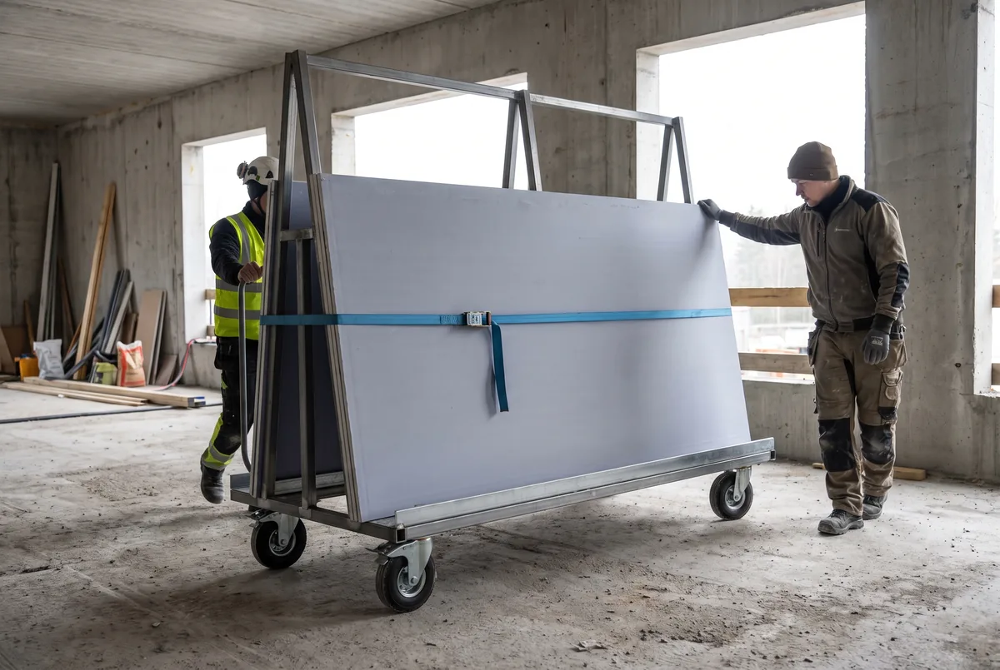
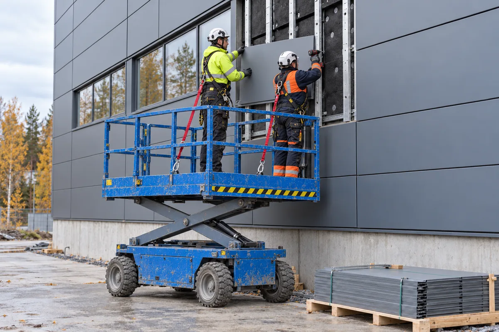
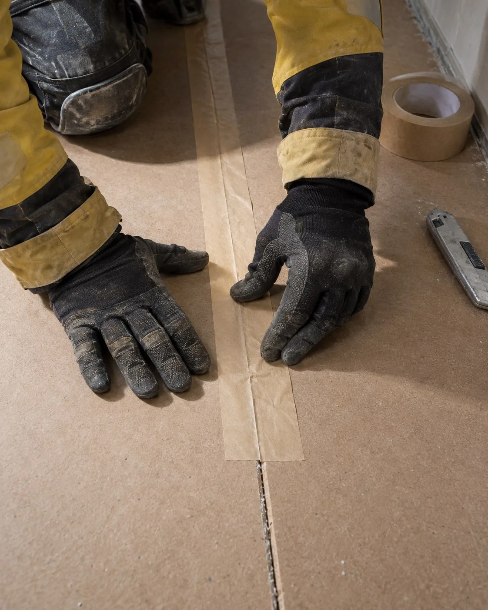
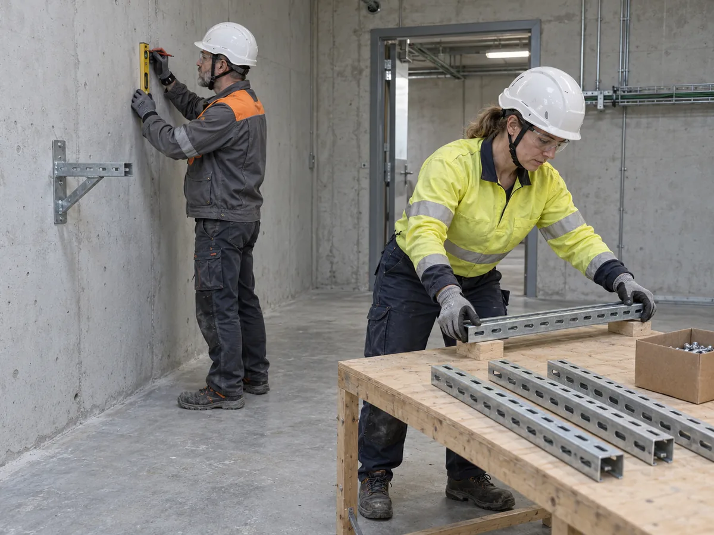
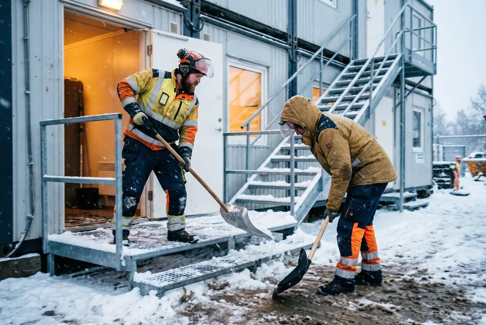
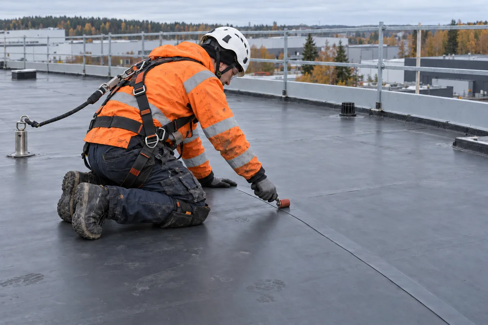
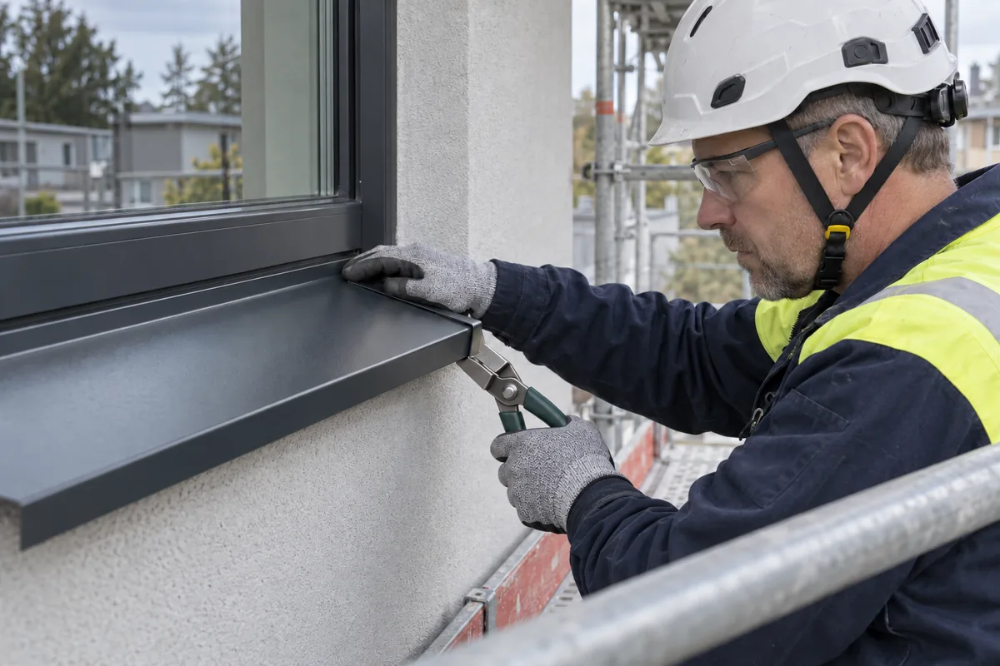
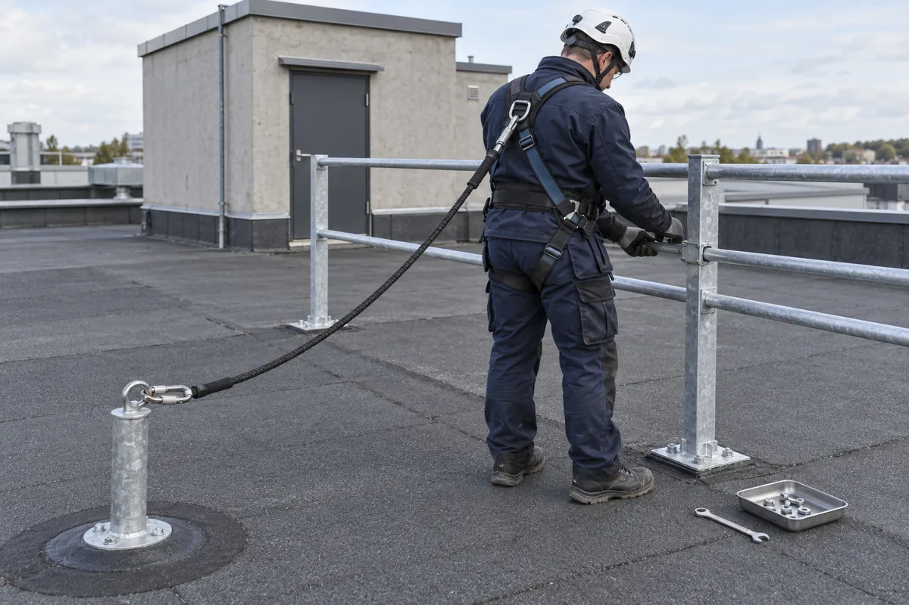

Datakeskustyömaat
Kohteen ohjeet osaksi työpäivää
Kulunvalvonta, puhtaus ja valmiit pinnat huomioidaan jokaisessa tehtävässä. Kulkuluvat ja perehdytys käydään läpi ennen työn aloitusta.
Kerro työmaastasiSiirrämme materiaalit sovituille paikoille ja pidämme kulkureitit kunnossa, jotta työnjohto ja asentajat voivat keskittyä omaan työhönsä.
Kulunvalvonta, puhtaus ja valmiit pinnat huomioidaan jokaisessa tehtävässä. Kulkuluvat ja perehdytys käydään läpi ennen työn aloitusta.
Kerro työmaastasi
Kun kuormien purku, materiaalien haalaus ja suojaukset hoidetaan järjestelmällisesti, työnjohto ja asennusryhmät voivat keskittyä omaan työhönsä.
Katso aputyöt
Omat ammattilaisemme asentavat vesikatot, pellitykset, julkisivuverhoukset ja kattoturvatuotteet.
Katso ammattityötYksi yritys päivittäisiin aputöihin, talvitöihin ja ammattitöihin. Jokaisella työllä on oma sivunsa.

SuojauksetLattiat, portaat, oviaukot ja haalausreitit.Katso työ
Asennusryhmien apuTyöpisteiden valmistelu ja sovitut avustavat työt.Katso työ Työmaan siisteysRakennusjätteet lajiteltuina ja kulkureitit vapaina.Katso työ
Työmaan siisteysRakennusjätteet lajiteltuina ja kulkureitit vapaina.Katso työ
Lumityöt ja hiekoitusKulkureitit, sisäänkäynnit ja sovitut työalueet.Katso työ
VesikattotyötBitumi-, kalvo- ja peltikatot sekä korjaukset.Katso työ
RakennuspeltityötPellitykset, listat ja sadevesijärjestelmät.Katso työJulkisivutyötLevyt, sandwich-paneelit, kasetit ja peltiverhoukset.Katso työ
KattoturvaKaiteet, vaijerit, ankkurit ja kulkusillat.Katso työ